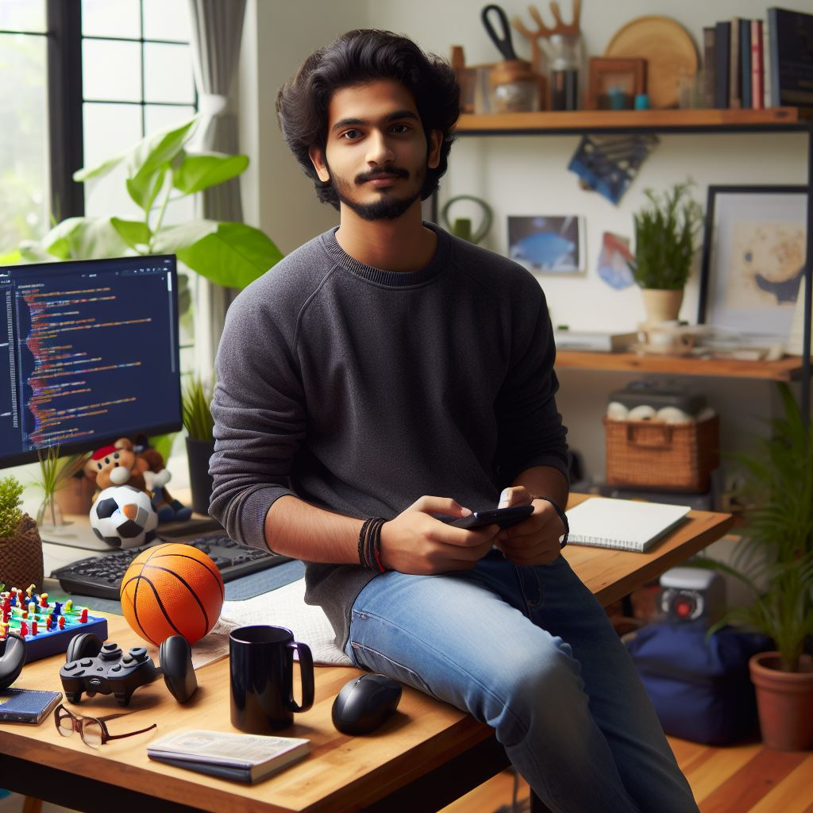

My hobbies span a variety of activities, from binge-watching Netflix series and playing games and going on long drives. Since coming to the USA, I've learned new skills like cooking and playing volleyball on campus.
I generated the above image as it perfectly mirrors my identity. I find joy in coding, indulge in online gaming extensively, and have a passion for playing basketball. This snapshot encapsulates my multifaceted interests, reflecting both my tech-savvy and athletic sides
Another hobby of mine is listening to music, especially Hindi songs. I have a collection of songs that I listen to regularly. Here's a video featuring some of my favorite songs that I enjoy listening